효빈광역시 관내 도로 목록 (ㄴ)
문서
토론
편집
역사
분류:
효빈광역시 | 도로 | 교통 | ㄴ목록
초성 이동:
ㄱ (50)
ㄴ (17)
ㄷ (19)
ㄹ (2)
ㅁ (12)
ㅂ (14)
ㅅ (34)
ㅇ (77)
ㅈ (28)
ㅊ (29)
ㅋ (2)
ㅌ (5)
ㅍ (19)
ㅎ (35)
기타 (5)
| 사진 | 도로명 | 노선 색상 | 총 연장 | 기점 | 종점 | 경유 행정구역 | 경유 버스 | 주요 시설물 |
|---|---|---|---|---|---|---|---|---|
|
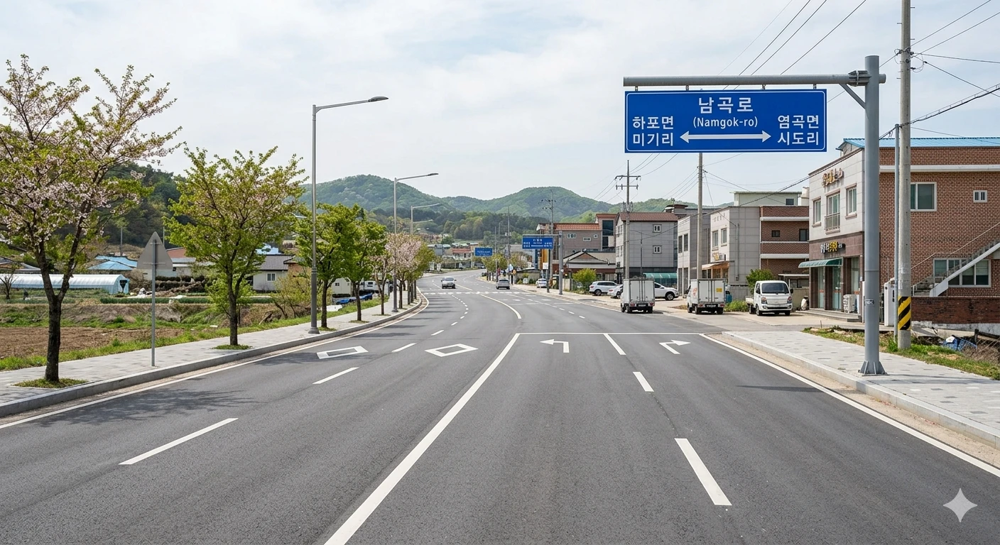 |
남곡로 |
#7777AA |
2390m | 덕빈북도 기도군 하포면 미기리 | 덕빈북도 기도군 염곡읍 시도리 | 덕빈북도 기도군 하포면 미기리 | 덕빈북도 기도군 염곡읍 시도리 | 경유 버스 없음 | |
|
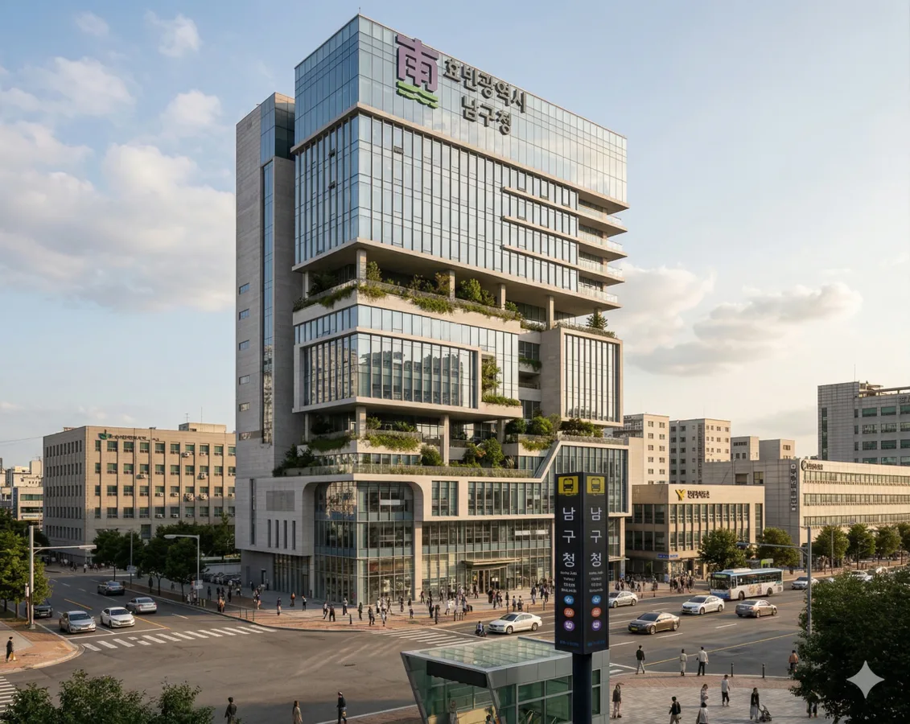 |
남구청로 |
#7777AA |
3236m | 효빈광역시 남구 평당3동(평당동) | 효빈광역시 남구 고당동(고간동) | 효빈광역시 남구 평당3동(평당동) | 효빈광역시 남구 고당동(고간동) | 효빈광역시 남구 평당6동(평당동) | 급행버스04, 급행버스05, 광역버스3000, 광역버스 9000, 공항버스A02, 간선버스19, 간선버스29, 지선버스292, 지선버스793, 지선버스891, 지선버스991 | 호르아파트, 평당3동행정복지센터, 효빈남부경찰서, 평당블루힐스아파트, 사북내역, 평당중해마루힐아파트, 평당고역, 평당지원더뷰아파트 |
|
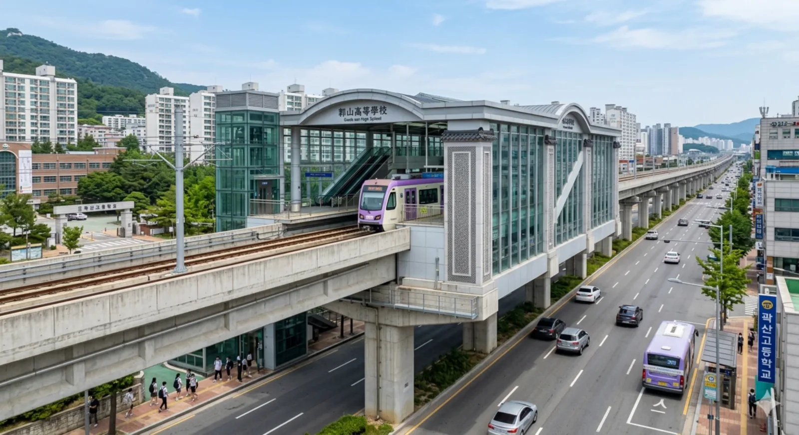 |
남당로 |
#7777AA |
7828m | 효빈광역시 남구 항4동(항동3가) | 효빈광역시 남구 곽산1동(곽산동) | 효빈광역시 남구 항4동(항동3가) | 효빈광역시 남구 곽산1동(곽산동) | 효빈광역시 남구(평당동) | 급행버스04, 급행버스05, 급행버스09, 순환버스90, 공항버스A02, 간선버스19, 간선버스29, 간선버스59, 간선버스69, 간선버스89, 지선버스191, 지선버스291, 지선버스292, 지선버스591, 지선버스592, 지선버스692, 지선버스793, 지선버스891, 지선버스892, 지선버스991, 마을버스 곽산01 | 곽산고, 효빈의료원, 더파크곽산아파트(2030예정), 안부아파트, 맥도날드 곽산DT, 남당역, 곽산고역, 우리나아파트, 선찬초, 어신중, 곽산대라수아파트, 데포리에아파트 |
|
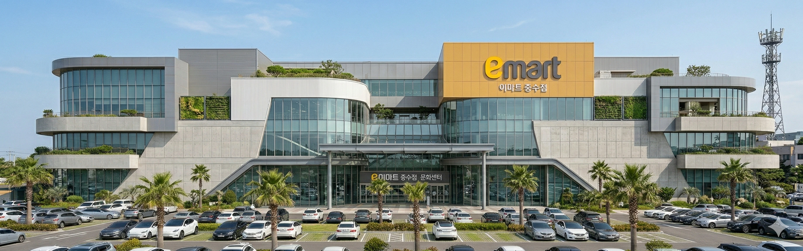 |
남약산로 |
#7777AA |
27313m | 덕빈북도 선곡군 귀총면 갑부리 | 덕빈북도 약산시 우부동 | 덕빈북도 선곡군 귀총면 갑부리 | 효빈광역시 탄성군 고해읍 전추리 | 효빈광역시 안천구 칠채동(남동) | 효빈광역시 탄성군 도향면 반주리 | 효빈광역시 탄성군 도향면 분음리 | 덕빈북도 약산시 산형동(대염동) | 덕빈북도 약산시 약산2동(약산동) | 덕빈북도 약산시 우부동(상수구동) | 덕빈북도 약산시 우부동 | 효빈광역시 탄성군 고해읍 장심리 | 효빈광역시 탄성군 도향면 일일리 | 효빈광역시 탄성군 도향면 춘일경리 | 급행버스03번, 급행버스05, 광역버스 4000, 광역버스 5000, 광역버스7000, 광역버스 9000, 좌석버스4004, 좌석버스5555, 간선버스14, 간선버스15, 간선버스46, 지선버스451, 지선버스522, 지선버스592, 마을버스 도향01, 마을버스 도향02, 마을버스 도향03, 마을버스 칠채01 | 도향역, 도향초, 도향면행정복지센터, 산형역, 탄미역, 약산시청역, 수구역, 상수구동 |
|
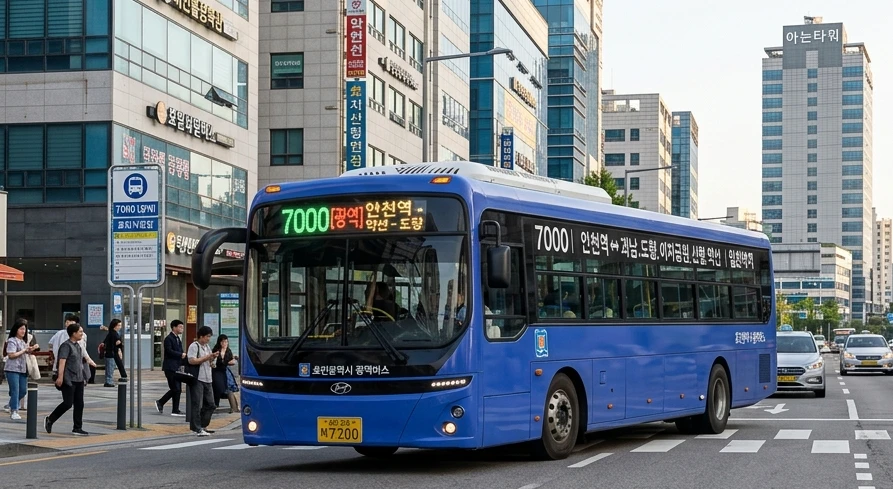 |
낭곡로 |
#7777AA |
9585m | 덕빈북도 약산시 성가면 성가리 | 덕빈북도 약산시 홍하면 평야리 | 덕빈북도 약산시 성가면 성가리 | 덕빈북도 약산시 성가면 당림리 | 덕빈북도 약산시 화소읍 화소리 | 덕빈북도 약산시 홍하면 홍하리 | 덕빈북도 약산시 홍하면 평야리 | 광역버스 5000, 광역버스7000, 광역버스 9000, 좌석버스4004 | 화소리 |

|
낭원대로 |
#7777AA |
5641m | 덕빈북도 치원군 채화면 장내리 | 덕빈북도 낭원군 내덕면 중야리 | 덕빈북도 치원군 채화면 장내리 | 덕빈북도 낭원군 내덕면 고남리 | 덕빈북도 낭원군 내덕면 내덕리 | 덕빈북도 낭원군 내덕면 중야리 | 경유 버스 없음 | |
|
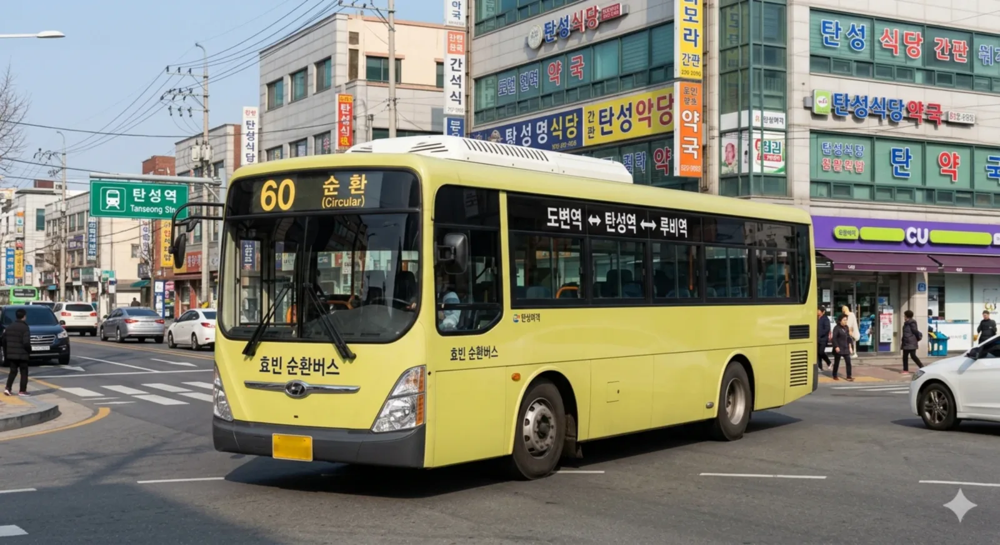 |
낭월로 |
#7777AA |
2334m | 효빈광역시 탄성군 흑택면 명현리 | 효빈광역시 탄성군 탄성읍 고무리 | 효빈광역시 탄성군 흑택면 명현리 | 효빈광역시 탄성군 탄성읍 고무리 | 효빈광역시 창전구 광정동(마시동) | 순환버스60, 좌석버스1111, 좌석버스6666, 간선버스27, 간선버스 77, 지선버스581, 지선버스671, 지선버스691, 지선버스692, 지선버스791, 마을버스 흑택01 | 전중공원 |
|
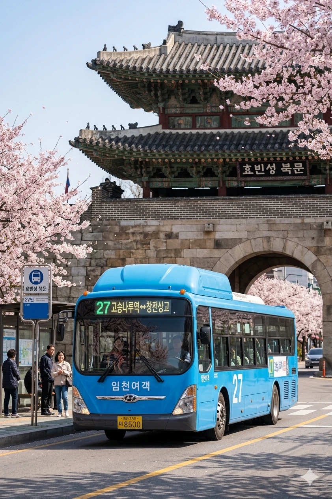 |
내서로 |
#7777AA |
1193m | 효빈광역시 중구 조유동(조유동2가) | 효빈광역시 중구 내조1동(내조동) | 효빈광역시 중구 조유동(조유동2가) | 효빈광역시 중구 조유동(천석동3가) | 효빈광역시 중구 내조1동(내조동) | 효빈광역시 중구 조유동(서남동) | 급행버스01, 급행버스08, 광역버스6000, 좌석버스2222, 공항버스A02, 간선버스11, 간선버스19, 간선버스27, 지선버스111, 지선버스123, 지선버스281, 지선버스162 | GS25 천석점, 효빈행복주택, 서남시장, 효빈여고, 효빈고 |

|
내성로 |
#7777AA |
1025m | 효빈광역시 서구 북성동(북문동1가) | 효빈광역시 서구 북성동(내성동2가) | 효빈광역시 서구 북성동(북문동1가) | 효빈광역시 서구 북성동(내성동2가) | 효빈광역시 서구 북성동(북문동2가) | 급행버스06, 순환버스10, 간선버스11, 간선버스12, 간선버스27, 간선버스28, 지선버스111, 지선버스112, 지선버스172, 지선버스191, 지선버스281, 지선버스291, 지선버스292, 지선버스162 | 북성동행정복지센터, 족포초(폐교), 헌산초중학교, 효빈성 북문공원 |
|
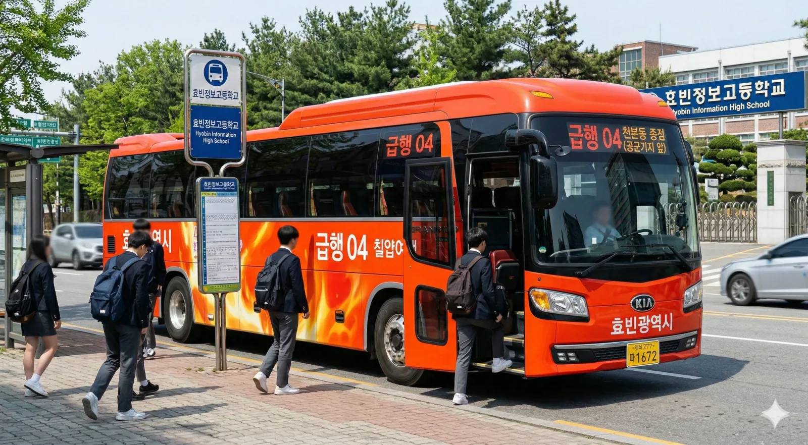 |
내항남북로 |
#7777AA |
4810m | 효빈광역시 중구 내항동 | 효빈광역시 남구 월천동(포장동) | 효빈광역시 중구 내항동 | 효빈광역시 중구 내항동(명일동) | 효빈광역시 남구 월천동(포장동) | 효빈광역시 남구 월천동(신흥동) | 급행버스01, 급행버스04, 급행버스05, 급행버스09, 순환버스90, 광역버스3000, 광역버스 9000, 공항버스A02, 간선버스11, 간선버스17, 간선버스19, 간선버스79, 지선버스141, 지선버스151, 지선버스154, 지선버스173, 지선버스192, 지선버스291, 지선버스292, 지선버스492, 지선버스591, 지선버스792, 마을버스 내항01 | 내항중, 한화솔루션 효빈공장, HD현대중공업, 현대중공업 효빈공장 |
|
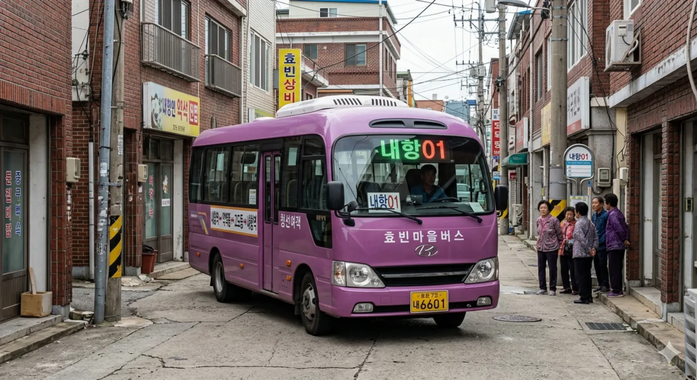 |
내항동서로 |
#7777AA |
1449m | 효빈광역시 중구 내항동 | 효빈광역시 중구 고도동 | 효빈광역시 중구 내항동 | 효빈광역시 중구 고도동 | 간선버스11, 지선버스194, 마을버스 내항01 | 7호선 내항차량기지, 효빈구세관 |
| 내항로 |
#7777AA |
4615m | 효빈광역시 중구 내항동 | 효빈광역시 중구 고도동(우이동) | 효빈광역시 중구 내항동 | 효빈광역시 중구 고도동 | 효빈광역시 중구 고도동(시남동) | 효빈광역시 중구 중앙동(심동1가) | 효빈광역시 중구 고도동(우이동) | 순환버스90, 광역버스 9000, 공항버스A02, 간선버스11, 간선버스29, 간선버스49, 간선버스59, 지선버스112, 지선버스141, 지선버스173, 지선버스194, 지선버스492, 지선버스591, 지선버스592, 지선버스692, 지선버스991, 마을버스 내항01 | 내항비치아파트 1단지, 내항비치아파트2단지(2030), 내항관광단지, 고도초(폐교), 심동주공2단지 | |
|
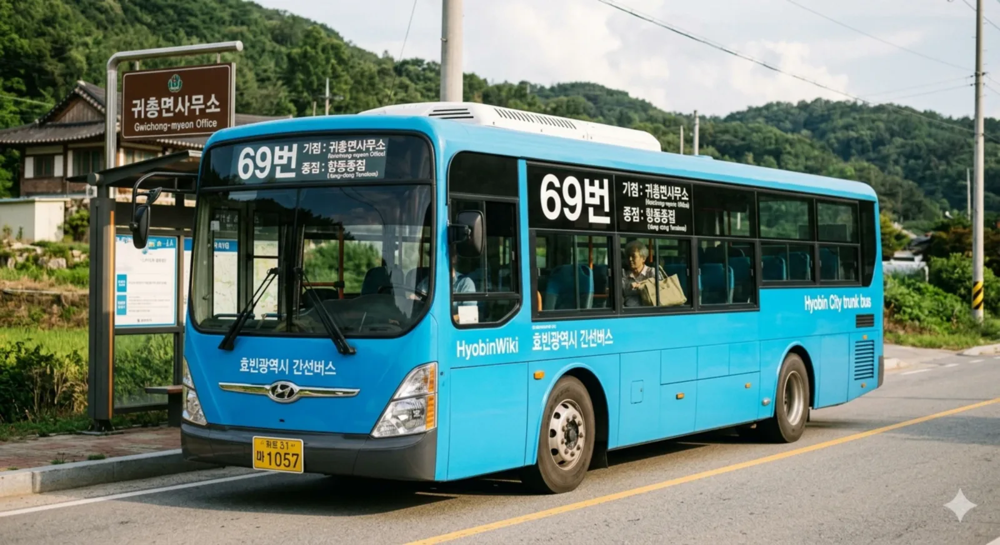 |
노산로 |
#7777AA |
3877m | 효빈광역시 청엽구 비마리동(사노동) | 효빈광역시 창전구 동곡동(투자동) | 효빈광역시 청엽구 비마리동(사노동) | 효빈광역시 창전구 동곡동(투자동) | 효빈광역시 청엽구 마잡2동(서증동) | 급행버스04, 순환버스80, 광역버스 9000, 간선버스16, 간선버스17, 간선버스26, 간선버스38, 간선버스 47, 간선버스58, 간선버스69, 간선버스78, 간선버스88, 지선버스154, 지선버스161, 지선버스171, 지선버스173, 지선버스181, 지선버스371, 지선버스831, 지선버스471, 지선버스571, 지선버스581, 지선버스 582, 지선버스162, 지선버스691, 지선버스 482, 지선버스 881, 지선버스891 | 비마 푸르지오 2단지, 색수고, 비마 쓰리와이 1단지, 마린시티, 월삼중고등학교, 동곡중고등학교, 비마역, 맥도날드 사노DT, 단라초, 서증초, 비내중, 사노 팔레트 아파트 |

|
노현로 |
#7777AA |
9319m | 효빈광역시 서구 청덕1동(청덕동) | 효빈광역시 북구 청능동(입희동) | 효빈광역시 서구 청덕1동(청덕동) | 효빈광역시 서구 과진6동(과진동) | 효빈광역시 서구 당선3동(당선동) | 효빈광역시 북구 소조동 | 효빈광역시 북구 청능동(입선동) | 효빈광역시 북구 청능동(입희동) | 효빈광역시 서구(과진동) | 효빈광역시 서구 당선2동(당선동) | 효빈광역시 북구 청능동 | 급행버스02번, 급행버스06, 급행버스08, 급행버스09, 순환버스20, 광역버스3000, 광역버스6000, 좌석버스2222, 좌석버스3333, 공항버스 A01, 공항버스A03, 간선버스11, 간선버스12, 간선버스22, 간선버스23, 간선버스24, 간선버스25, 간선버스26, 간선버스28, 간선버스29, 간선버스33, 간선버스39, 지선버스111, 지선버스172, 지선버스129, 지선버스221, 지선버스231, 지선버스232, 지선버스241, 지선버스251, 지선버스252, 지선버스261, 지선버스262, 지선버스281, 지선버스291, 지선버스292, 지선버스 361, 지선버스391, 지선버스522, 지선버스162 | 5호선 청덕차량기지, 효빈교통공사 5호선 청덕차량기지, 과진아쿠아2단지, 송진공원, 효빈서고, 사복 빛여울채, 당선 에듀타운, 신원초, 월드아파트, 효빈대 북부기숙사, 효빈대 기숙사 희다관(1~5)(53), 효빈대 기숙사, 기숙사2(54), 갤러리아 백화점 효빈점, 당선2동행정복지센터, 맥도날드 당선DT, 베르데홀(29), 효빈대학교 애니메이션-철도 박물관(58), KFC 당선점, 자연과학대학 1호관(28-1), 자연과학대학 3호관(28-3), 소조 주공, 효빈대 사대부고, 교통대학 기지역, 학군단(37), 소조 휴먼시아, 청능초, 효빈교육대학교, 이남고 |
|
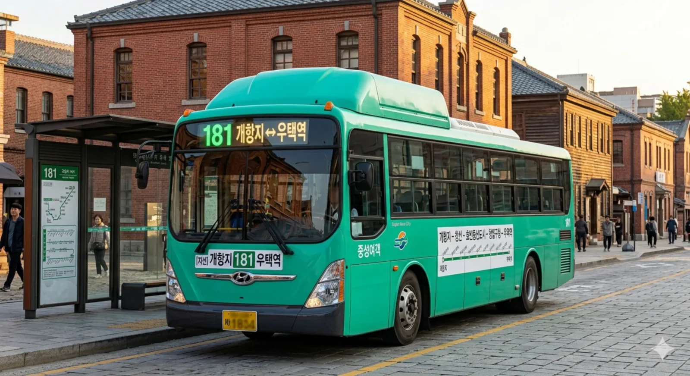 |
뇌전로 |
#7777AA |
6542m | 효빈광역시 동구 덕현5동(덕현동) | 효빈광역시 안천구 뇌전동(하가동) | 효빈광역시 동구 덕현5동(덕현동) | 효빈광역시 청엽구 우택동 | 효빈광역시 안천구 북택동(하구동) | 효빈광역시 안천구 뇌전동 | 효빈광역시 안천구 뇌전동(하가동) | 효빈광역시 동구 덕현11동(덕현동) | 효빈광역시 안천구 뇌전동(치장동) | 급행버스01, 급행버스04, 순환버스10, 순환버스40, 좌석버스6666, 좌석버스7777, 공항버스 A01, 간선버스18, 간선버스24, 간선버스35, 간선버스36, 간선버스38, 간선버스 47, 간선버스88, 간선버스89, 지선버스151, 지선버스181, 지선버스252, 지선버스261, 지선버스262, 지선버스271, 지선버스341, 지선버스 361, 지선버스831, 지선버스441, 지선버스471, 지선버스472, 지선버스492, 지선버스 582, 지선버스362, 지선버스 781, 지선버스 482, 지선버스 881, 지선버스891, 지선버스892, 마을버스 뇌전01 | 덕현9동행정복지센터, 시건초, 우택월드스타 아파트, 우택역, 하구 주공 1단지, 북택 스위첸 아파트, 치구역, 치구역공원, 효빈광역시 소방학교, 뇌전역, 뇌전초, 효빈글로벌도시재단, 버거킹 하가점 |
|
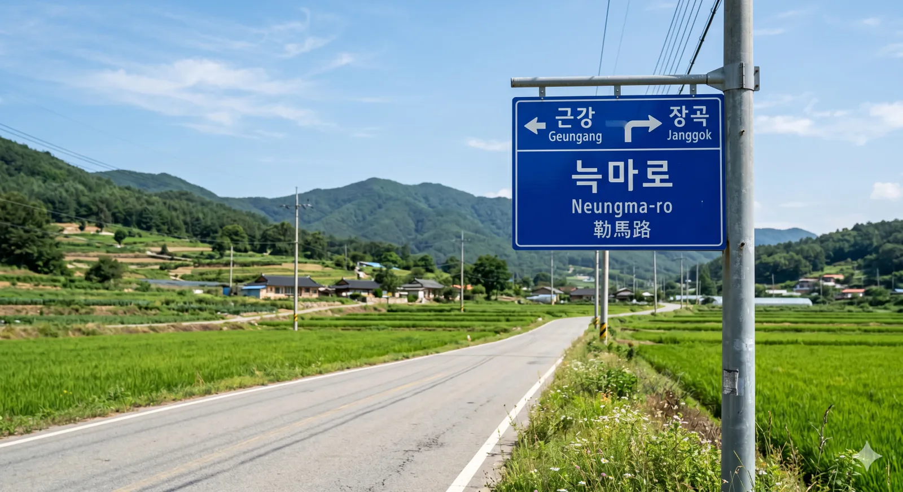 |
늑마로 |
#7777AA |
5059m | 덕빈북도 약산시 근강면 지전리 | 덕빈북도 약산시 장곡읍 장곡리 | 덕빈북도 약산시 근강면 지전리 | 덕빈북도 약산시 장곡읍 마현리 | 덕빈북도 약산시 장곡읍 장곡리 | 경유 버스 없음 | |
|
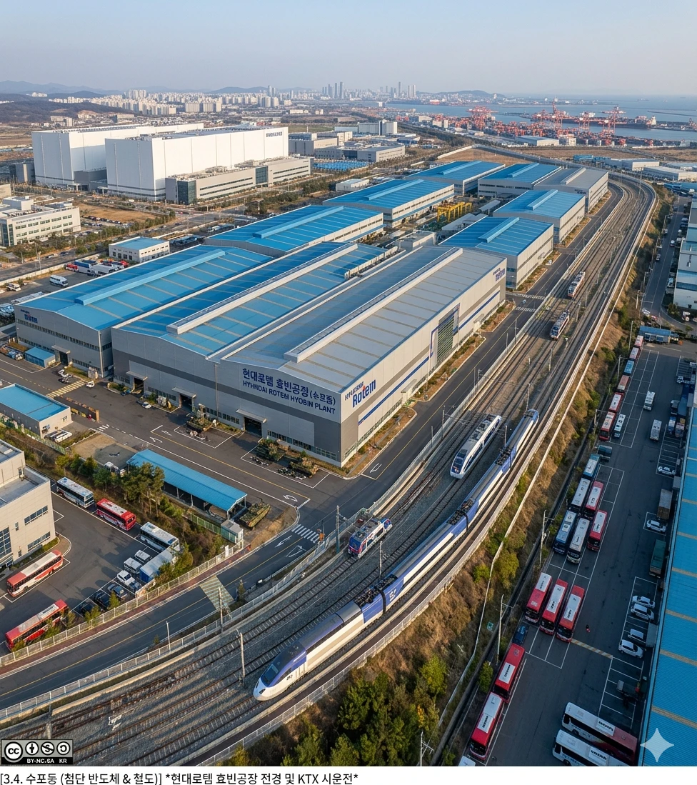 |
능곡로 |
#7777AA |
1376m | 덕빈북도 약산시 산형동 | 덕빈북도 선곡군 해로면 해로리 | 덕빈북도 약산시 산형동 | 덕빈북도 선곡군 해로면 해로리 | 광역버스 4000, 광역버스7000, 광역버스 9000 |